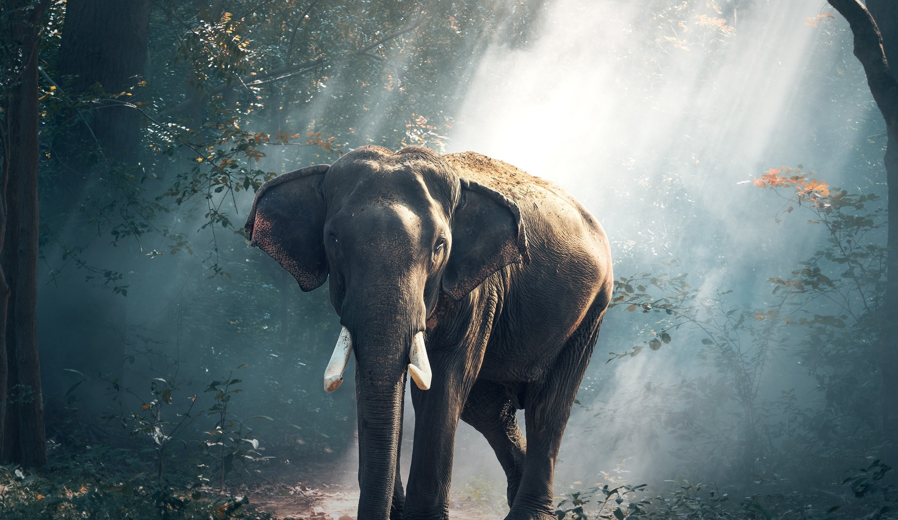

Save The wild
The future is in your hand.

Reduce ,Reuse,Recycle
Be the change you want to see in the world.

Be Brave and Save Wildlife
Live and let them live too.
The future is in your hand.
Be the change you want to see in the world.
Live and let them live too.
Save, rehabilitate, and encourage sustainable use of terrestrial ecosystems.
Planting trees can help in combation climate action.
Our aims to protect the wildlife that has been endangered humans and environmental changes due to climate changes.The white and larger one-horned rhinos, some populations of African elephants, mountain gorillas, giant pandas, and tigers are just a few of the iconic animals that our fieldwork has helped save from extinction over the past 50 years.Our efforts have assisted thousands of species by aiding in the protection of all the diversity of life within their ecosystems, not just a few particular species of wildlife who now have a more secure future.The improvement of livelihoods, food security, access to clean water, incomes, and the social and political stability of communities are all direct benefits of our work to conserve wildlife.
The pupose of our recycling programme is to make sure the environment is clean and lessens the quantity of waste that is disposed of in landfills and incinerators.Both the depletion of natural resources and the rapid filling of landfills are current global issues. The way we produce, consume, and dispose of waste now is no longer sustainable. Everyone, from small businesses to major enterprises, needs to reconsider their perspectives on how to dispose of waste. We can all help to safeguard the environment, conserve natural resources, and maintain the world for future generations by cutting down on the amount of waste we produce and recycling what we already have.
The initiative of this programme is to counter the issues of climate changes. Additionally, planting trees can contribute to the creation of cool, clean air. As carbon dioxide is absorbed by the trees, the air temperature and heat are likewise reduced. This implies that trees can improve the air we breathe by purifying it. Wildlife relies on the trees as well. Animals seek for trees as a location of safety, food, and refuge. Deforestation has caused the extinction of numerous creatures. In addition, trees help prevent natural disasters like floods, landslides, and drought.